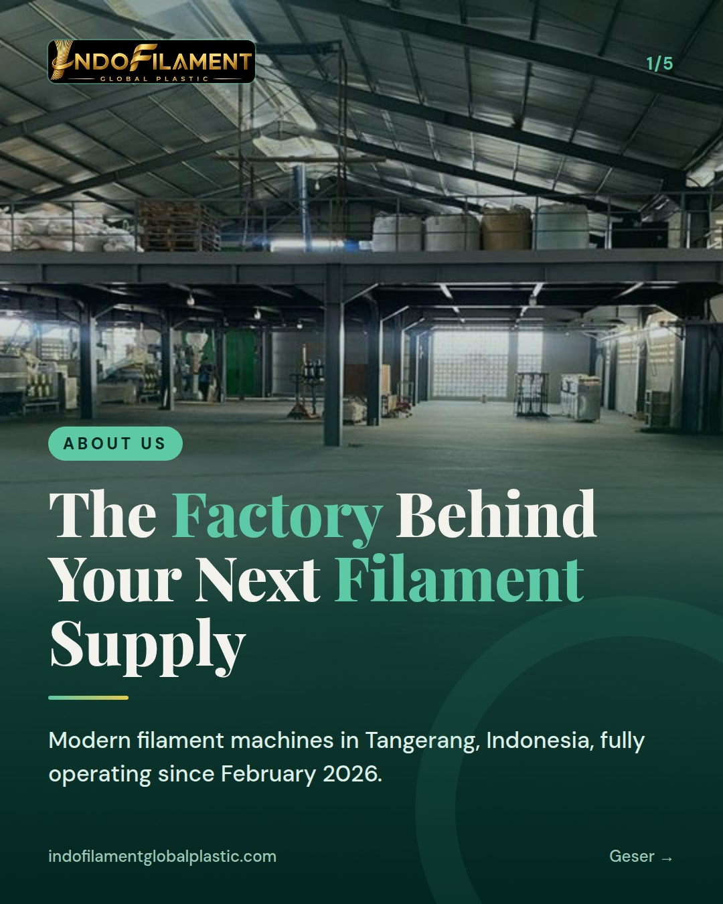
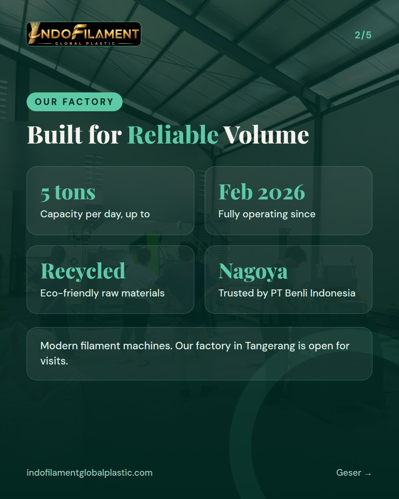
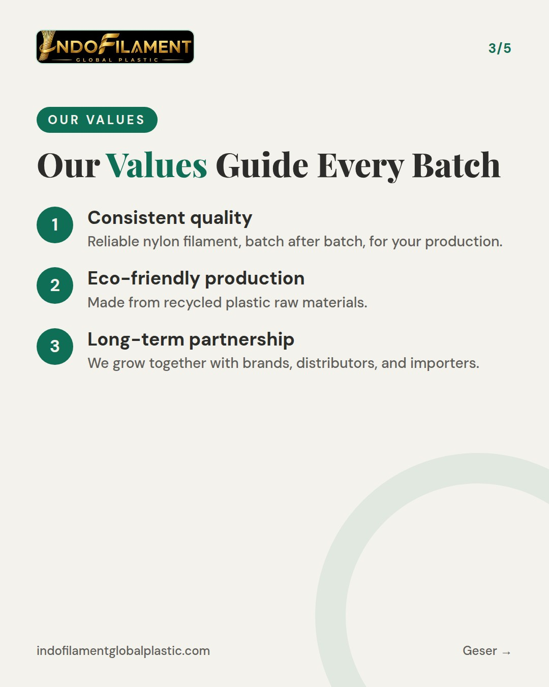
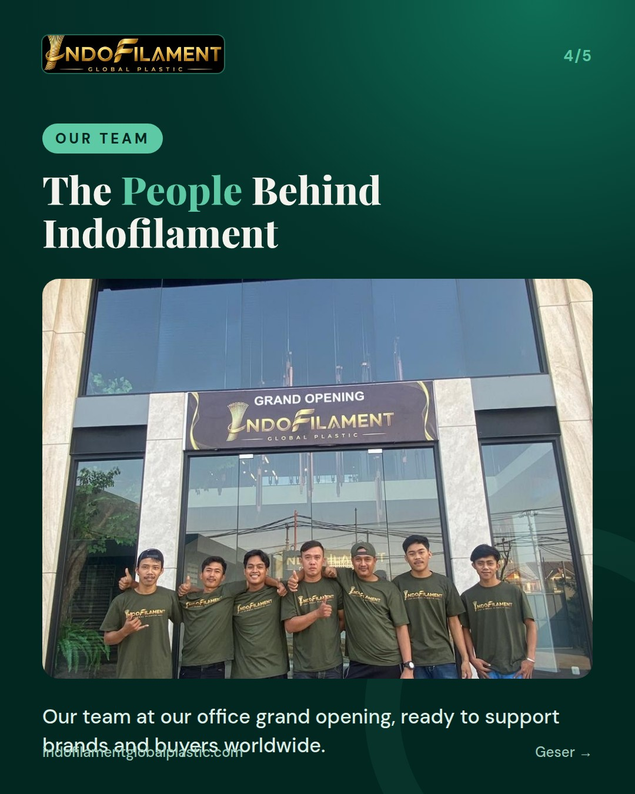
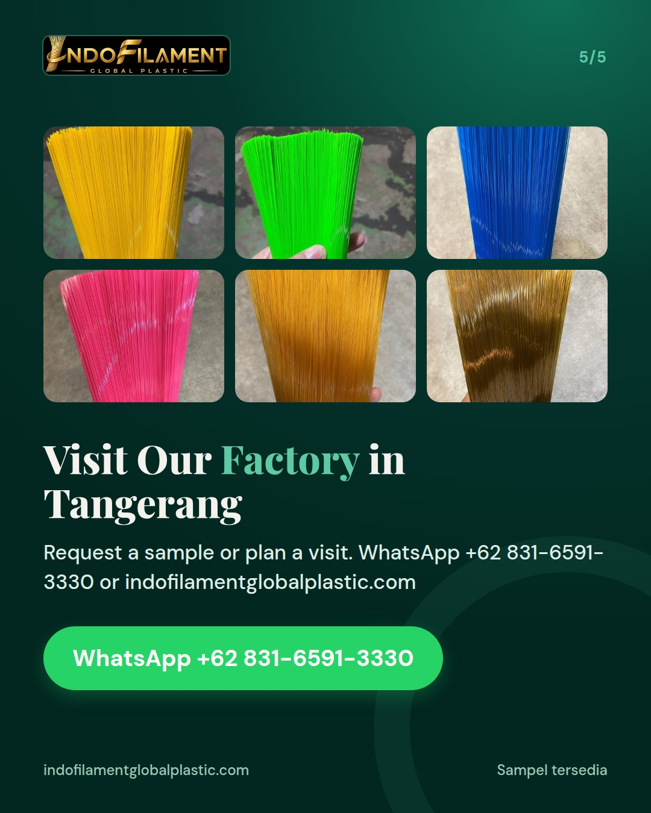

WRITE EVERYTHING IN FULL ENGLISH (all slide text and the whole caption, no Indonesian at all; English hashtags only). Audience: international and local B2B buyers. INTRO SERIES 2 of 3 - ABOUT US. Cover kicker: About Us. Content: our factory in Tangerang, Indonesia, fully operating since February 2026 with modern filament machines; capacity up to 5 tons per day; recycled plastic raw materials, eco-friendly; trusted by the Nagoya brand (PT Benli Indonesia); our factory is open for visits. Our values: consistent quality, eco-friendly production, long-term partnership. Use photo team (our team at the grand opening of our office) on one photo slide about the people behind Indofilament. Caption: part 2 of our introduction series.





Introduction Series, Part 2 of 3: About Us 🏭 Behind every broom and brush is a filament supplier you can count on. Meet PT Indofilament Global Plastic, a nylon filament factory in Tangerang, Indonesia. We have been fully operating since February 2026 with modern filament machines and a production capacity of up to 5 tons per day. Our filaments are made from recycled plastic raw materials, so quality and sustainability go hand in hand. We are proud to be trusted by the Nagoya brand (PT Benli Indonesia). What we stand for: ✔ Consistent quality ✔ Eco-friendly production ✔ Long-term partnership Behind it all is our team, photographed here at our office grand opening. Our factory is open for visits, and we would be glad to show you how we work. Request a sample via WhatsApp +62 831-6591-3330 or send us a DM. For international buyers: we supply nylon broom and brush filaments for domestic and export markets, with OEM and private label options. Contact us for samples or to arrange a factory visit. 📍 Jl. Perancis No.79, Dadap, Tangerang 🌐 indofilamentglobalplastic.com #broomfilament #brushfilament #nylonfilament #filamentmanufacturer #madeinindonesia #ecofriendly #recycledmaterials #privatelabel #oemmanufacturer #b2b #factoryvisit #indofilament